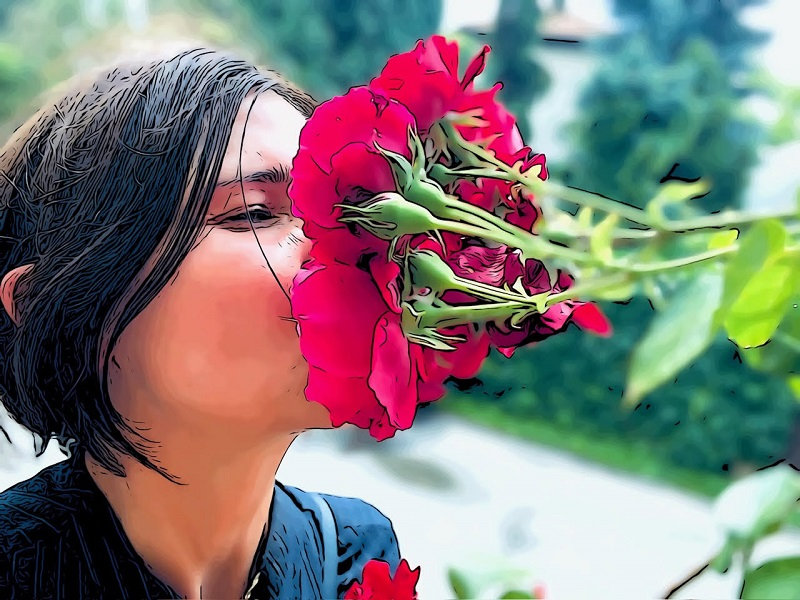

Pane Bože jenom to ne
Prosila jsem, když jsem Tebe a Tvého syna viděla poprvé v životě v nemocničním pokoji, kde jsme spolu strávily měsíc, milá moja. Tvůj chlapeček byl roční a kousek a mému byly jen tři měsíce. Na tvém malém byly znát všechny ty mozkové operace (dohromady jich prodělal za svůj život osm) a já původním povoláním rehabilitační sestra, poprvé v životě, viděla postižené dítě.
Byla jsi vlídným svědkem toho, jak se mi rozpadá manželství a já byla svědkem návštěv tvého muže a malé holčičky, tvé dcery. Od té doby se přátelíme. Mám takový tajemství. Miluju tvoje nářečí, kterým mluvíš, všechny ty slepice a kury, když se rozohníš a začneš vyprávět o svém malém hospodářství. A taky tu tvojí neskutečnou pohostinnost, jakou jsme zažili, když jsme u vás kdykoli zastavili s Jakubem a naším žlutým maluškem, polským fiátkem.
Sledujeme se celé roky navzájem, radíme si kolem dětí. S úžasem jsem obdivovala ten vysoký standard lásky a péče, který si poskytovala svému synovi, naprosto samozřejmě. Potřebuje motomed? Seženeme. Ta houpací síť by pro něj byla dobrá? Kupujeme. Nový vozík? Zařídíme. Sedací ortéza? Dlahy? Operace? Navštévy doktorů, úřadů ale i speciální školy? Tu jsem ti jednu dobu upřímně záviděla. Tvoje kombinace zdravého selského rozumu a nezištné mateřské lásky tvému synovi zařídila domácí stravu a nebe na zemi. Pošli pusinku miláčku, říkala jsi a on se rozzářil tak, že i slunce by bylo zahanbené a poslal pusinku… víc nezvládl.
Tvůj syn odešel doma, pod dohledem lékařů a v tvém náručí po dvaceti pěti letech, zkrátka mu dohořela svíčka. Na pohřeb přišla téměr celá vesnice. Patřil tam.
Naučil mě pokoře a skromnosti, moc jsme ho milovali, říkáš a stýská se ti. A já vím, že si taková byla vždycky. Příští týden slavíš šedesát milá moja. Z tvé holčičky je učitelka v mateřské školce. A ty se poslední půlrok dáváš dohromady a začínáš znovu spát, tak jak si doposud celé čtvrt století nespala.
Nechci, aby to vypadalo, že si stěžuju, říkáš. Na pracovním úřadě ti vyměřili podporu po úmrtí tvého syna a po pětadvaceti letech náročné péče 5.896 korun, kterou snížili po dvou měsících na 5.500 a teď na 4324 korun. V lednu budeš zcela bez peněz. My jsme skromní říkáš, vyjdeme. Máte domeček, který jste si postavili vlastníma rukama ještě před dětmi. Máš muže.
Víš, milá moja, u nás doma soutěžime, kdo to zabalí první. Stačí jeden fatální noční záchvat, který přeslechnu. A v mém případě stači recidiva. Když umřu, stát na Jakuba v ústavní péči navýší prostředky nejméně dvakrát. To víš - zákoník práce, platy, opravy budov. A když první odejde Jakub, ocitnu se zcela bez peněz a na ulici ze dne na den. Po čtvrt století péče. Vše, včetně bezbarierového bytu je vázáno na Jakuba.
Dívám si na tebe milá moja a říkám si, jak skvěle se ten osud dá zvládnout s pomocí Boží a s pomocí rodiny a partnera, když každý dělá, co má a umí. Bylo tam nepochybně mnoho těžkých okamžiků a starostí, ale ten výsledný pocit, to je to, co se počítá.
Velmi, velmi, velmi si tě vážím.
I když náš stát si nás neváží ani jedné.
Přeji ti zdravé vnoučátko a ještě moc moc radosti na tomhle světě.
Všechno nejlepší milá moja…